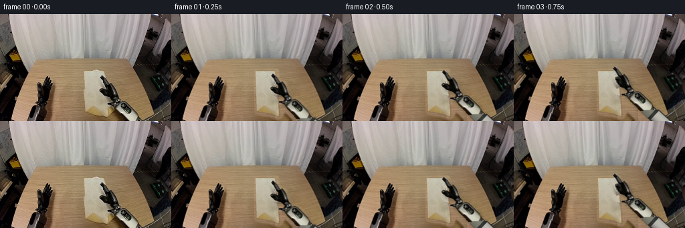
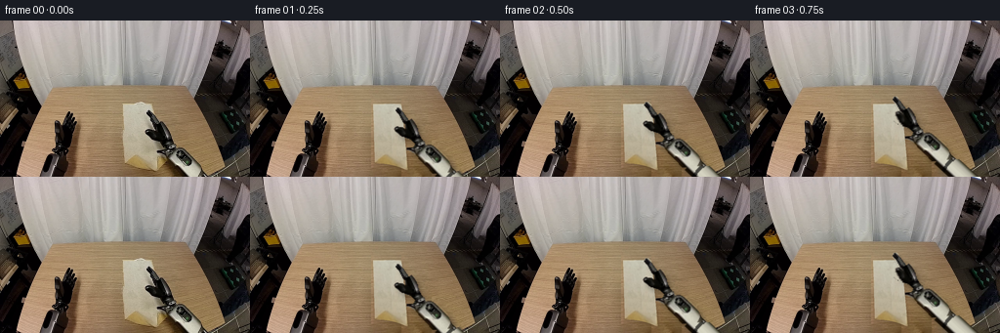
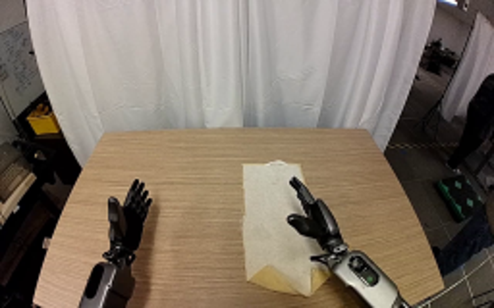
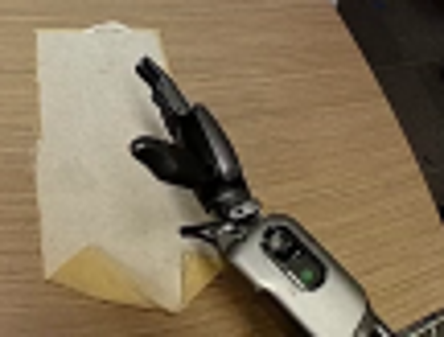
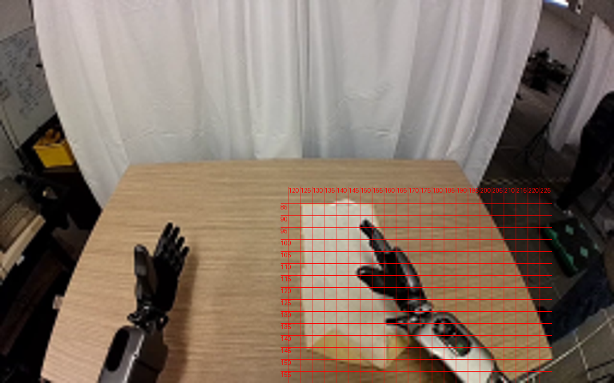
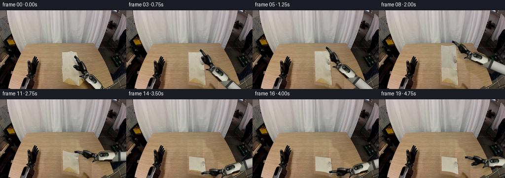
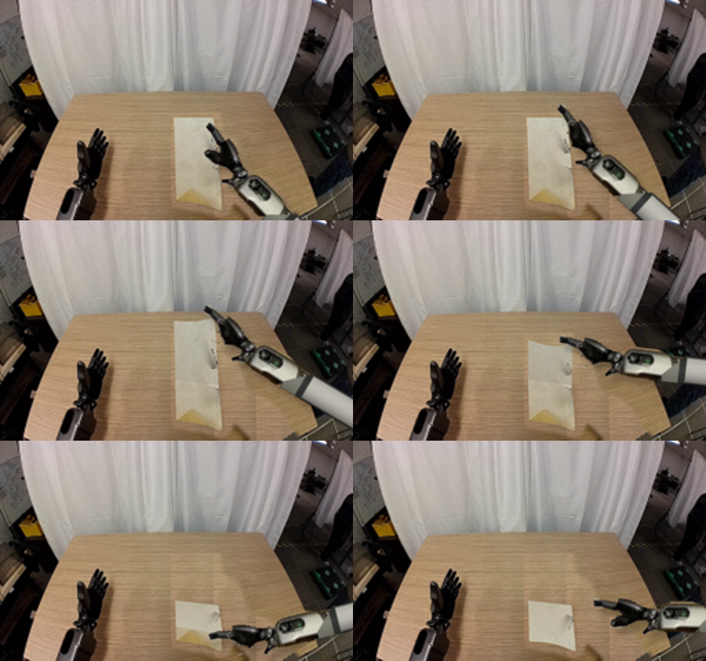
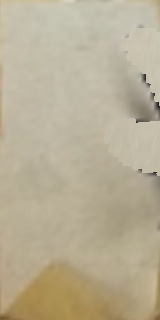
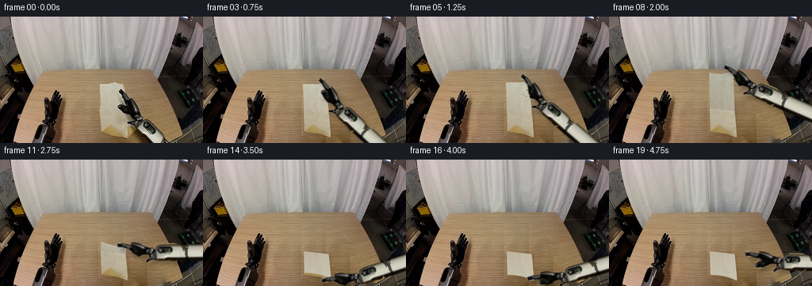
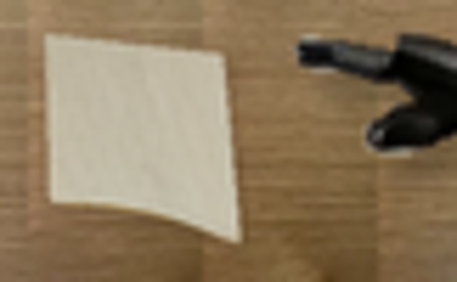

CODING AGENTS AS PIXEL WORLD MODELS
traex/GPT-6.1-Sol · common50_0029
点击播放 · 原生 RGB 像素
逐轮保存的候选
回放视频、检查图与代码变化。
每份候选均可单独播放。实际图片检查记录在下方工具轨迹中。
候选 01播放与检查图
点击播放 · 原生 RGB 像素


展开代码变化
--- 上一保存版本
+++ 本次保存版本
@@ -0,0 +1,254 @@
+from pathlib import Path
+import math
+import numpy as np
+from PIL import Image, ImageDraw, ImageFilter
+import cv2
+import artifact_io
+
+ROOT=Path(__file__).resolve().parent
+W,H=256,160
+S=3
+im=np.array(Image.open(ROOT/'first_frame.png').convert('RGB'))
+
+def poly_mask(points, size=(W,H),scale=1):
+ m=Image.new('L',(size[0]*scale,size[1]*scale));ImageDraw.Draw(m).polygon([(round(x*scale),round(y*scale)) for x,y in points],fill=255)
+ return np.array(m)
+
+def smooth(x):
+ x=np.clip(x,0,1);return x*x*(3-2*x)
+
+def sample(a,x,y):
+ return cv2.remap(a,x.astype(np.float32),y.astype(np.float32),cv2.INTER_LINEAR,borderMode=cv2.BORDER_REPLICATE)
+
+# Pixel-extracted, rigid robot parts: outlines follow the original photograph.
+arm_outline=[(151.3,92.0),(154.0,92.3),(157,96),(159,99),(161,102),(163.1,105.2),(166,103.1),(168.6,106),(170.6,111),(172.9,118),(175.6,123.7),(178.8,126.2),(180.3,130),(186,130),(191,132.5),(197,138),(201,142.5),(204.6,148.8),(207.1,153),(210.1,156),(214,160),(190.1,164),(183.2,154),(176,146.8),(169.6,140),(164,136.3),(161.1,135.4),(160.7,133.2),(168,131.8),(169.6,128.8),(166.1,124.8),(161,123.4),(156.2,121.3),(152.5,118.6),(149,115.5),(148.2,113),(149.6,111.4),(152.3,110.8),(156.7,112.0),(160.5,114.0),(159.9,109.2),(157.1,105.5),(154.8,101),(151.7,97.6),(149.9,95.2)]
+arm_mask=poly_mask(arm_outline)
+thumb_poly=[(148.2,112.6),(150.0,110.9),(153,110.9),(157.2,112.7),(161.1,115.4),(164.0,118.7),(163.3,122.5),(159.5,123.1),(155.7,120.9),(151.8,118),(149.2,115.9)]
+thumb_mask=poly_mask(thumb_poly)
+
+cloth_outline=[(125.8,85),(137.5,85),(144.8,82.8),(150.6,84.8),(155.6,84.7),(160.0,108),(168.2,139),(166.5,143.5),(160.4,153.7),(150.5,151.2),(144.2,149.5),(128,146.5),(126.3,126.5)]
+cloth_mask=poly_mask(cloth_outline)
+
+# Reconstruct only the table region revealed by the moving cloth and arm.
+cover=np.maximum(arm_mask,cloth_mask)
+cover=cv2.dilate(cover,np.ones((7,7),np.uint8))
+cover=cv2.GaussianBlur(cover,(7,7),1.2)/255.
+table=poly_mask([(55,67),(198,67),(230,142),(202,160),(25,160)]) /255.
+yy,xx=np.mgrid[0:H,0:W]
+# The unobstructed central tabletop is a source of the exact wood grain.
+sx=90+np.mod(xx-124,31)
+wood=im[yy,sx].astype(float)
+# Gentle lighting change across the tabletop.
+wood+=((xx-106)*0.065)[...,None]
+# At the very bottom, retain a narrow and physically stationary table rim.
+base=im.astype(float)*(1-(cover*table)[...,None])+wood*(cover*table)[...,None]
+# Outside the tabletop, a neutral dark underside is revealed only at the bottom edge.
+out=cover*(1-table)*(yy>146)*(xx>176)
+floor=im[np.minimum(yy,153),np.maximum(xx,235)].astype(float)
+base=base*(1-out[...,None])+floor*out[...,None]
+base=np.clip(base,0,255).astype(np.uint8)
+
+# The original cloth's visible fiber, illumination and small front curls form its texture.
+TW,TH=160,320
+u,v=np.meshgrid(np.linspace(0,1,TW),np.linspace(0,1,TH))
+def initial_xy(u,v):
+ x=125.8+1.9*v+u*(29.1+5.3*v-0.5*v*v)
+ y=85.3+61.0*v+7.3*u*v
+ # The near edge is naturally turned up at the two corners.
+ y-=2.2*np.sin(np.pi*u)*(v**12)
+ return x,y
+cx,cy=initial_xy(u,v)
+texture=sample(im,cx,cy).astype(float)
+occ=sample(arm_mask,cx,cy)>10
+occ|=(cx>164.2)&(cy>139)
+# Match the unobstructed weave while filling areas initially hidden by the gripper.
+source_x=128+11*(0.5+0.5*np.sin(19*u+7*v))
+source_y=np.minimum(133,87+v*53)
+clean=sample(im,source_x,source_y).astype(float)
+clean+=(2.0+4.0*u)[...,None]
+texture[occ]=clean[occ]
+texture=np.clip(texture,0,255).astype(np.uint8)
+# The irregular far hem is only a few pixels high.
+
+# Texture sprite extends rigidly beyond the initial image crop; the arm does not stretch.
+AW,AH=300,245
+sprite=np.zeros((AH,AW,4),np.uint8)
+sprite[:H,:W,:3]=im
+sprite[:H,:W,3]=arm_mask
+# Continue the forearm behind the frame boundary with its original width and materials.
+# Coordinates are in the rigid longitudinal/transverse frame of the forearm.
+direction=np.array([.704,.710]);normal=np.array([-.710,.704]);origin=np.array([174.4,132.0])
+ya,xa=np.mgrid[0:AH,0:AW]
+p=np.stack([xa-origin[0],ya-origin[1]],axis=-1)
+long=p@direction;cross=p@normal
+extension=(long>32)&(long<145)&(np.abs(cross)<10.5)&(ya>=159)
+# End cross-section copied from the same silver/black robot link.
+for j in range(AH):
+ for i in range(AW):
+ if not extension[j,i]:continue
+ q=cross[j,i];l=long[j,i]
+ if l<44:
+ rgb=np.array([104,104,93.])+(1-abs(q)/10.5)*24
+ elif l<49:
+ rgb=np.array([37,40,37.])+(1-abs(q)/10.5)*19
+ else:
+ br=115+73*np.maximum(0,1-((q+2.5)/10.8)**2)
+ rgb=np.array([br,br*.99,br*.94])
+ if abs(q)>9:rgb*=.36
+ sprite[j,i,:3]=np.clip(rgb,0,255);sprite[j,i,3]=255
+# Separate thumb is articulated around a fixed pin; each component remains rigid.
+thumb=np.zeros_like(sprite);thumb[:H,:W,:3]=im;thumb[:H,:W,3]=thumb_mask
+core=sprite.copy()
+core[:H,:W,3]=np.minimum(core[:H,:W,3],255-thumb_mask)
+# Small palm fill avoids a cutout at the thumb pivot.
+for j in range(116,125):
+ for i in range(159,165):
+ if arm_mask[j,i] and thumb_mask[j,i]:
+ core[j,i,:3]=im[j,min(i+4,169)];core[j,i,3]=255
+
+# Render continuous cloth geometry as a regular textured triangle mesh.
+NU,NV=18,44
+us=np.linspace(0,1,NU+1);vs=np.linspace(0,1,NV+1)
+U,V=np.meshgrid(us,vs)
+
+def cloth_vertices(theta,shadow=False):
+ # A central fold. The held right corner leads the otherwise free edge slightly.
+ angle=theta-0.09*np.sin(theta)*(1-U)
+ distant=V<.5
+ d=np.maximum(0,.5-V)
+ vv=np.where(distant,.5-d*np.cos(angle),V)
+ x,y=initial_xy(U,vv)
+ height=76*d*np.sin(angle)
+ # The cloth sags smoothly across its free span, not as a solid panel.
+ height*=.88+.12*U
+ height-=3.2*np.sin(np.pi*U)*np.sin(theta)*np.minimum(1,d*3)
+ if shadow:
+ x=x+height*.08+1.0
+ y=y+height*.12+1.0
+ else:
+ y=y-height
+ x=x+1.1*np.sin(theta)*np.sin(np.pi*U)*d
+ # The final double layer rests a fraction above the lower layer.
+ if theta>2.8 and not shadow:
+ y-=distant*.5*smooth((theta-2.8)/.34)
+ return np.stack([x,y],axis=-1)*S
+
+texcoords=np.stack([U*(TW-1),V*(TH-1)],axis=-1)
+# Lower half always rendered first, lifted/folded half afterward.
+triangles=[]
+for j in list(range(NV//2,NV))+list(range(NV//2-1,-1,-1)):
+ for i in range(NU):
+ triangles.append(((j,i),(j,i+1),(j+1,i+1)))
+ triangles.append(((j,i),(j+1,i+1),(j+1,i)))
+
+def render_cloth(theta, shadow=False):
+ verts=cloth_vertices(theta,shadow)
+ result=np.zeros((H*S,W*S,4),np.float32)
+ for tri in triangles:
+ pts=np.array([verts[a] for a in tri]);tcs=np.array([texcoords[a] for a in tri])
+ lo=np.maximum(0,np.floor(pts.min(axis=0)).astype(int));hi=np.minimum([W*S-1,H*S-1],np.ceil(pts.max(axis=0)).astype(int))
+ if np.any(hi<lo):continue
+ a,b,c=pts
+ den=(b[1]-c[1])*(a[0]-c[0])+(c[0]-b[0])*(a[1]-c[1])
+ if abs(den)<1e-5:continue
+ Y,X=np.mgrid[lo[1]:hi[1]+1,lo[0]:hi[0]+1]
+ wa=((b[1]-c[1])*(X-c[0])+(c[0]-b[0])*(Y-c[1]))/den
+ wb=((c[1]-a[1])*(X-c[0])+(a[0]-c[0])*(Y-c[1]))/den
+ wc=1-wa-wb
+ inside=(wa>=-1e-5)&(wb>=-1e-5)&(wc>=-1e-5)
+ dst=result[lo[1]:hi[1]+1,lo[0]:hi[0]+1]
+ if shadow:
+ dst[inside]=[0,0,0,255]
+ else:
+ tx=wa*tcs[0,0]+wb*tcs[1,0]+wc*tcs[2,0]
+ ty=wa*tcs[0,1]+wb*tcs[1,1]+wc*tcs[2,1]
+ col=sample(texture,tx,ty).astype(float)
+ if np.mean([V[k] for k in tri])<.5:
+ # Lifted cloth turns its softly illuminated reverse side toward the camera.
+ lift=np.sin(theta)
+ light=1-.11*lift
+ col=col*light
+ reverse=smooth((theta-1.1)/1.1)
+ col=col*(1-.34*reverse)+(.34*reverse)*np.array([194,184,160])
+ # Very fine soft creases in the relaxed folded surface.
+ col-=((1.1*np.sin(tx*.32+ty*.10)+.7*np.sin(tx*.57-ty*.13))*reverse)[...,None]
+ dst[inside,:3]=col[inside];dst[inside,3]=255
+ return np.clip(result,0,255).astype(np.uint8)
+
+def warp_rgba(src,matrix):
+ return cv2.warpAffine(src,matrix,(W*S,H*S),flags=cv2.INTER_LINEAR,borderMode=cv2.BORDER_CONSTANT)
+
+def robot_pose(contact,angle,closure):
+ # A single wrist rotation and rigid translation; a hinge closes the thumb.
+ th=math.radians(closure)
+ ct,st=np.cos(th),np.sin(th)
+ pivot=np.array([163.,120.])
+ rot=np.array([[ct,-st],[st,ct]])
+ m=np.c_[rot,pivot-rot@pivot]
+ moving=cv2.warpAffine(thumb,m,(AW,AH),flags=cv2.INTER_LINEAR)
+ local=core.astype(float)
+ al=moving[:,:,3:4]/255.
+ local[:,:,:3]=local[:,:,:3]*(1-al)+moving[:,:,:3]*al
+ local[:,:,3]=np.maximum(local[:,:,3],moving[:,:,3])
+ # Retain the exact source pixels at the start.
+ if closure<.01:local=sprite.astype(float)
+ th=math.radians(angle);r=np.array([[np.cos(th),-np.sin(th)],[np.sin(th),np.cos(th)]])
+ source_contact=np.array([156.,101.])
+ t=np.array(contact)-r@source_contact
+ m=np.c_[r*S,t*S]
+ return warp_rgba(local.astype(np.uint8),m)
+
+def over(canvas,rgba):
+ a=rgba[:,:,3:4].astype(float)/255.
+ return canvas*(1-a)+rgba[:,:,:3]*a
+
+frames=[]
+for f in range(20):
+ if f==0:
+ frames.append(im.copy());continue
+ # Approach, grasp, raise, swing over the crease, lay down, then release.
+ if f<=4:
+ p=smooth(f/4)
+ theta=0
+ contact=np.array([156.,101.])*(1-p)+np.array([154.9,85.3])*p
+ angle=-3*p;closure=48*smooth((f-2)/2)
+ elif f<=15:
+ t=(f-4)/11
+ theta=np.pi*smooth(t)
+ right=cloth_vertices(theta)[0,-1]/S
+ contact=right
+ angle=-3-62*smooth(t)
+ closure=48
+ else:
+ theta=np.pi
+ p=smooth((f-15)/4)
+ last=cloth_vertices(theta)[0,-1]/S
+ contact=last*(1-p)+np.array([184.,120.])*p
+ angle=-65+20*p
+ closure=48*(1-smooth((f-15)/2))
+ canvas=np.array(Image.fromarray(base).resize((W*S,H*S),Image.Resampling.BICUBIC)).astype(float)
+ shadow=render_cloth(theta,True)[:,:,3]
+ shadow=cv2.GaussianBlur(shadow,(0,0),1.4*S+1.1*S*np.sin(theta))/255.
+ # Raised fabric casts a diffuse shadow, placed on the unchanged tabletop.
+ canvas*=1-(.15*shadow)[...,None]
+ cloth=render_cloth(theta)
+ canvas=over(canvas,cloth)
+ robot=robot_pose(contact,angle,closure)
+ rm=robot[:,:,3]
+ ms=np.array([[1,0,4*S],[0,1,5*S]],np.float32)
+ rs=cv2.warpAffine(rm,ms,(W*S,H*S))
+ rs=cv2.GaussianBlur(rs,(0,0),2*S)/255.
+ table_hi=np.array(Image.fromarray((table*255).astype(np.uint8)).resize((W*S,H*S),Image.Resampling.BILINEAR))/255.
+ canvas*=1-(rs*.22*table_hi)[...,None]
+ canvas=over(canvas,robot)
+ frame=np.array(Image.fromarray(np.clip(canvas,0,255).astype(np.uint8)).resize((W,H),Image.Resampling.LANCZOS))
+ # Ease the tiny photographic reconstruction differences in during the first approach.
+ if f==1:
+ # Static pixels outside the reconstructed region stay exactly fixed.
+ pass
+ frames.append(frame)
+frames=np.stack(frames)
+artifact_io.save(frames,ROOT)
+Image.fromarray(base).save(ROOT/'.tmp/background.png')
+Image.fromarray(texture).save(ROOT/'.tmp/cloth_texture.png')
+Image.fromarray(sprite).save(ROOT/'.tmp/robot.png')
候选 02播放与检查图
点击播放 · 原生 RGB 像素


展开代码变化
--- 上一保存版本
+++ 本次保存版本
@@ -3,6 +3,8 @@
import numpy as np
from PIL import Image, ImageDraw, ImageFilter
import cv2
+from scipy.sparse import coo_matrix
+from scipy.sparse.linalg import spsolve
import artifact_io
ROOT=Path(__file__).resolve().parent
@@ -41,7 +43,24 @@
# Gentle lighting change across the tabletop.
wood+=((xx-106)*0.065)[...,None]
# At the very bottom, retain a narrow and physically stationary table rim.
-base=im.astype(float)*(1-(cover*table)[...,None])+wood*(cover*table)[...,None]
+# A harmonic boundary match retains grain without rectangular patch seams.
+region=(cover>.01)&(table>.5)
+ids=np.full((H,W),-1,int);ids[region]=np.arange(region.sum())
+ys,xs=np.where(region)
+rows=[];cols=[];vals=[]
+rhs=np.zeros((len(ys),3),float)
+delta=im.astype(float)-wood
+for k,(y,x) in enumerate(zip(ys,xs)):
+ neighbors=[(ny,nx) for ny,nx in [(y-1,x),(y+1,x),(y,x-1),(y,x+1)] if 0<=ny<H and 0<=nx<W]
+ rows.append(k);cols.append(k);vals.append(len(neighbors))
+ for ny,nx in neighbors:
+ if region[ny,nx]:
+ rows.append(k);cols.append(ids[ny,nx]);vals.append(-1)
+ else:rhs[k]+=delta[ny,nx]
+mat=coo_matrix((vals,(rows,cols)),shape=(len(ys),len(ys))).tocsr()
+correction=spsolve(mat,rhs)
+wood[region]+=correction
+base=im.astype(float).copy();base[region]=wood[region]
# Outside the tabletop, a neutral dark underside is revealed only at the bottom edge.
out=cover*(1-table)*(yy>146)*(xx>176)
floor=im[np.minimum(yy,153),np.maximum(xx,235)].astype(float)
@@ -59,14 +78,17 @@
return x,y
cx,cy=initial_xy(u,v)
texture=sample(im,cx,cy).astype(float)
-occ=sample(arm_mask,cx,cy)>10
+occ=sample(cv2.dilate(arm_mask,np.ones((7,7),np.uint8)),cx,cy)>10
+occ|=(cx>145)&(cy>95)&(cy<139)
occ|=(cx>164.2)&(cy>139)
# Match the unobstructed weave while filling areas initially hidden by the gripper.
source_x=128+11*(0.5+0.5*np.sin(19*u+7*v))
-source_y=np.minimum(133,87+v*53)
+source_y=np.minimum(135,85+v*61)
clean=sample(im,source_x,source_y).astype(float)
clean+=(2.0+4.0*u)[...,None]
-texture[occ]=clean[occ]
+replacement=cv2.GaussianBlur(occ.astype(np.float32),(0,0),2.3)
+replacement=np.maximum(replacement,occ.astype(float)*.98)
+texture=texture*(1-replacement[...,None])+clean*replacement[...,None]
texture=np.clip(texture,0,255).astype(np.uint8)
# The irregular far hem is only a few pixels high.
@@ -87,14 +109,16 @@
for i in range(AW):
if not extension[j,i]:continue
q=cross[j,i];l=long[j,i]
- if l<44:
- rgb=np.array([104,104,93.])+(1-abs(q)/10.5)*24
- elif l<49:
- rgb=np.array([37,40,37.])+(1-abs(q)/10.5)*19
- else:
- br=115+73*np.maximum(0,1-((q+2.5)/10.8)**2)
- rgb=np.array([br,br*.99,br*.94])
- if abs(q)>9:rgb*=.36
+ sl=29.3
+ source=origin+sl*direction+q*normal
+ rgb=sample(im,np.array([[source[0]]]),np.array([[source[1]]]))[0,0].astype(float)
+ if l<40.5+1.7*(q/10.5)**2:
+ edge_t=(158.3-origin[1]-q*normal[1])/direction[1]
+ source=origin+direction*edge_t+q*normal
+ edge=sample(im,np.array([[source[0]]]),np.array([[source[1]]]))[0,0].astype(float)
+ rgb=edge*(1-smooth((l-32)/8))+rgb*smooth((l-32)/8)
+ if 40.5+1.7*(q/10.5)**2<=l<44+1.7*(q/10.5)**2:
+ rgb*=.34
sprite[j,i,:3]=np.clip(rgb,0,255);sprite[j,i,3]=255
# Separate thumb is articulated around a fixed pin; each component remains rigid.
thumb=np.zeros_like(sprite);thumb[:H,:W,:3]=im;thumb[:H,:W,3]=thumb_mask
@@ -193,7 +217,7 @@
# Retain the exact source pixels at the start.
if closure<.01:local=sprite.astype(float)
th=math.radians(angle);r=np.array([[np.cos(th),-np.sin(th)],[np.sin(th),np.cos(th)]])
- source_contact=np.array([156.,101.])
+ source_contact=np.array([159.,102.])
t=np.array(contact)-r@source_contact
m=np.c_[r*S,t*S]
return warp_rgba(local.astype(np.uint8),m)
@@ -210,7 +234,7 @@
if f<=4:
p=smooth(f/4)
theta=0
- contact=np.array([156.,101.])*(1-p)+np.array([154.9,85.3])*p
+ contact=np.array([159.,102.])*(1-p)+np.array([154.9,85.3])*p
angle=-3*p;closure=48*smooth((f-2)/2)
elif f<=15:
t=(f-4)/11
@@ -242,6 +266,11 @@
canvas*=1-(rs*.22*table_hi)[...,None]
canvas=over(canvas,robot)
frame=np.array(Image.fromarray(np.clip(canvas,0,255).astype(np.uint8)).resize((W,H),Image.Resampling.LANCZOS))
+ active=np.maximum.reduce([robot[:,:,3].astype(float)/255,cloth[:,:,3].astype(float)/255,rs*table_hi,shadow])
+ active=cv2.resize(active,(W,H),interpolation=cv2.INTER_AREA)
+ active=np.maximum(active,cover)
+ fixed=cv2.dilate((active>.002).astype(np.uint8),np.ones((3,3),np.uint8))==0
+ frame[fixed]=im[fixed]
# Ease the tiny photographic reconstruction differences in during the first approach.
if f==1:
# Static pixels outside the reconstructed region stay exactly fixed.
可观测工具轨迹
实际执行的命令与返回图片。
命令 1exit 0
/bin/bash -lc "ls -la && cat prompt.txt && printf '\\n---RULES---\\n' && cat GENERATION_RULES.md"
命令 2exit 0
/bin/bash -lc "cat task_spec.json && cat artifact_io.py && python - <<'PY'
from PIL import Image
im=Image.open('first_frame.png'); print(im.size); im.resize((1024,640)).save('.tmp/enlarged.png')
PY"命令 3exit 0
/bin/bash -lc "python - <<'PY'
from PIL import Image
im=Image.open('first_frame.png')
im.crop((117,78,225,160)).resize((864,656)).save('.tmp/crop.png')
PY"命令 4exit 0
/bin/bash -lc "python - <<'PY' import importlib.util for p in ['cv2','scipy','numpy','PIL']: print(p, bool(importlib.util.find_spec(p))) PY"
命令 5exit 0
/bin/bash -lc "python - <<'PY'
from PIL import Image
import numpy as np
im=np.array(Image.open('first_frame.png'))
for p in [(130,95),(140,90),(135,120),(140,134),(134,143),(144,148),(178,95),(112,110),(190,120),(200,155),(187,153)]:
x,y=p;print(p,im[y,x])
PY"命令 6exit 0
/bin/bash -lc "python - <<'PY'
from PIL import Image,ImageDraw
im=Image.open('first_frame.png').resize((1024,640))
d=ImageDraw.Draw(im)
for x in range(120,226,5):
d.line((x*4,78*4,x*4,640), fill=(255,0,0),width=1);d.text((x*4+1,78*4),str(x),fill=(255,0,0))
for y in range(85,161,5):
d.line((117*4,y*4,230*4,y*4),fill=(255,0,0),width=1);d.text((117*4,y*4),str(y),fill=(255,0,0))
im.save('.tmp/grid.png')
PY"命令 7exit 0
/bin/bash -lc "cat > generate.py <<'PY'
from pathlib import Path
import math
import numpy as np
from PIL import Image, ImageDraw, ImageFilter
import cv2
import artifact_io
ROOT=Path(__file__).resolve().parent
W,H=256,160
S=3
im=np.array(Image.open(ROOT/'first_frame.png').convert('RGB'))
def poly_mask(points, size=(W,H),scale=1):
m=Image.new('L',(size[0]*scale,size[1]*scale));ImageDraw.Draw(m).polygon([(round(x*scale),round(y*scale)) for x,y in points],fill=255)
return np.array(m)
def smooth(x):
x=np.clip(x,0,1);return x*x*(3-2*x)
def sample(a,x,y):
return cv2.remap(a,x.astype(np.float32),y.astype(np.float32),cv2.INTER_LINEAR,borderMode=cv2.BORDER_REPLICATE)
# Pixel-extracted, rigid robot parts: outlines follow the original photograph.
arm_outline=[(151.3,92.0),(154.0,92.3),(157,96),(159,99),(161,102),(163.1,105.2),(166,103.1),(168.6,106),(170.6,111),(172.9,118),(175.6,123.7),(178.8,126.2),(180.3,130),(186,130),(191,132.5),(197,138),(201,142.5),(204.6,148.8),(207.1,153),(210.1,156),(214,160),(190.1,164),(183.2,154),(176,146.8),(169.6,140),(164,136.3),(161.1,135.4),(160.7,133.2),(168,131.8),(169.6,128.8),(166.1,124.8),(161,123.4),(156.2,121.3),(152.5,118.6),(149,115.5),(148.2,113),(149.6,111.4),(152.3,110.8),(156.7,112.0),(160.5,114.0),(159.9,109.2),(157.1,105.5),(154.8,101),(151.7,97.6),(149.9,95.2)]
arm_mask=poly_mask(arm_outline)
thumb_poly=[(148.2,112.6),(150.0,110.9),(153,110.9),(157.2,112.7),(161.1,115.4),(164.0,118.7),(163.3,122.5),(159.5,123.1),(155.7,120.9),(151.8,118),(149.2,115.9)]
thumb_mask=poly_mask(thumb_poly)
cloth_outline=[(125.8,85),(137.5,85),(144.8,82.8),(150.6,84.8),(155.6,84.7),(160.0,108),(168.2,139),(166.5,143.5),(160.4,153.7),(150.5,151.2),(144.2,149.5),(128,146.5),(126.3,126.5)]
cloth_mask=poly_mask(cloth_outline)
# Reconstruct only the table region revealed by the moving cloth and arm.
cover=np.maximum(arm_mask,cloth_mask)
cover=cv2.dilate(cover,np.ones((7,7),np.uint8))
cover=cv2.GaussianBlur(cover,(7,7),1.2)/255.
table=poly_mask([(55,67),(198,67),(230,142),(202,160),(25,160)]) /255.
yy,xx=np.mgrid[0:H,0:W]
# The unobstructed central tabletop is a source of the exact wood grain.
sx=90+np.mod(xx-124,31)
wood=im[yy,sx].astype(float)
# Gentle lighting change across the tabletop.
wood+=((xx-106)*0.065)[...,None]
# At the very bottom, retain a narrow and physically stationary table rim.
base=im.astype(float)*(1-(cover*table)[...,None])+wood*(cover*table)[...,None]
# Outside the tabletop, a neutral dark underside is revealed only at the bottom edge.
out=cover*(1-table)*(yy>146)*(xx>176)
floor=im[np.minimum(yy,153),np.maximum(xx,235)].astype(float)
base=base*(1-out[...,None])+floor*out[...,None]
base=np.clip(base,0,255).astype(np.uint8)
# The original cloth's visible fiber, illumination and small front curls form its texture.
TW,TH=160,320
u,v=np.meshgrid(np.linspace(0,1,TW),np.linspace(0,1,TH))
def initial_xy(u,v):
x=125.8+1.9*v+u*(29.1+5.3*v-0.5*v*v)
y=85.3+61.0*v+7.3*u*v
# The near edge is naturally turned up at the two corners.
y-=2.2*np.sin(np.pi*u)*(v**12)
return x,y
cx,cy=initial_xy(u,v)
texture=sample(im,cx,cy).astype(float)
occ=sample(arm_mask,cx,cy)>10
occ|=(cx>164.2)&(cy>139)
# Match the unobstructed weave while filling areas initially hidden by the gripper.
source_x=128+11*(0.5+0.5*np.sin(19*u+7*v))
source_y=np.minimum(133,87+v*53)
clean=sample(im,source_x,source_y).astype(float)
clean+=(2.0+4.0*u)[...,None]
texture[occ]=clean[occ]
texture=np.clip(texture,0,255).astype(np.uint8)
# The irregular far hem is only a few pixels high.
# Texture sprite extends rigidly beyond the initial image crop; the arm does not stretch.
AW,AH=300,245
sprite=np.zeros((AH,AW,4),np.uint8)
sprite[:H,:W,:3]=im
sprite[:H,:W,3]=arm_mask
# Continue the forearm behind the frame boundary with its original width and materials.
# Coordinates are in the rigid longitudinal/transverse frame of the forearm.
direction=np.array([.704,.710]);normal=np.array([-.710,.704]);origin=np.array([174.4,132.0])
ya,xa=np.mgrid[0:AH,0:AW]
p=np.stack([xa-origin[0],ya-origin[1]],axis=-1)
long=p@direction;cross=p@normal
extension=(long>32)&(long<145)&(np.abs(cross)<10.5)&(ya>=159)
# End cross-section copied from the same silver/black robot link.
for j in range(AH):
for i in range(AW):
if not extension[j,i]:continue
q=cross[j,i];l=long[j,i]
if l<44:
rgb=np.array([104,104,93.])+(1-abs(q)/10.5)*24
elif l<49:
rgb=np.array([37,40,37.])+(1-abs(q)/10.5)*19
else:
br=115+73*np.maximum(0,1-((q+2.5)/10.8)**2)
rgb=np.array([br,br*.99,br*.94])
if abs(q)>9:rgb*=.36
sprite[j,i,:3]=np.clip(rgb,0,255);sprite[j,i,3]=255
# Separate thumb is articulated around a fixed pin; each component remains rigid.
thumb=np.zeros_like(sprite);thumb[:H,:W,:3]=im;thumb[:H,:W,3]=thumb_mask
core=sprite.copy()
core[:H,:W,3]=np.minimum(core[:H,:W,3],255-thumb_mask)
# Small palm fill avoids a cutout at the thumb pivot.
for j in range(116,125):
for i in range(159,165):
if arm_mask[j,i] and thumb_mask[j,i]:
core[j,i,:3]=im[j,min(i+4,169)];core[j,i,3]=255
# Render continuous cloth geometry as a regular textured triangle mesh.
NU,NV=18,44
us=np.linspace(0,1,NU+1);vs=np.linspace(0,1,NV+1)
U,V=np.meshgrid(us,vs)
def cloth_vertices(theta,shadow=False):
# A central fold. The held right corner leads the otherwise free edge slightly.
angle=theta-0.09*np.sin(theta)*(1-U)
distant=V<.5
d=np.maximum(0,.5-V)
vv=np.where(distant,.5-d*np.cos(angle),V)
x,y=initial_xy(U,vv)
height=76*d*np.sin(angle)
# The cloth sags smoothly across its free span, not as a solid panel.
height*=.88+.12*U
height-=3.2*np.sin(np.pi*U)*np.sin(theta)*np.minimum(1,d*3)
if shadow:
x=x+height*.08+1.0
y=y+height*.12+1.0
else:
y=y-height
x=x+1.1*np.sin(theta)*np.sin(np.pi*U)*d
# The final double layer rests a fraction above the lower layer.
if theta>2.8 and not shadow:
y-=distant*.5*smooth((theta-2.8)/.34)
return np.stack([x,y],axis=-1)*S
texcoords=np.stack([U*(TW-1),V*(TH-1)],axis=-1)
# Lower half always rendered first, lifted/folded half afterward.
triangles=[]
for j in list(range(NV//2,NV))+list(range(NV//2-1,-1,-1)):
for i in range(NU):
triangles.append(((j,i),(j,i+1),(j+1,i+1)))
triangles.append(((j,i),(j+1,i+1),(j+1,i)))
def render_cloth(theta, shadow=False):
verts=cloth_vertices(theta,shadow)
result=np.zeros((H*S,W*S,4),np.float32)
for tri in triangles:
pts=np.array([verts[a] for a in tri]);tcs=np.array([texcoords[a] for a in tri])
lo=np.maximum(0,np.floor(pts.min(axis=0)).astype(int));hi=np.minimum([W*S-1,H*S-1],np.ceil(pts.max(axis=0)).astype(int))
if np.any(hi<lo):continue
a,b,c=pts
den=(b[1]-c[1])*(a[0]-c[0])+(c[0]-b[0])*(a[1]-c[1])
if abs(den)<1e-5:continue
Y,X=np.mgrid[lo[1]:hi[1]+1,lo[0]:hi[0]+1]
wa=((b[1]-c[1])*(X-c[0])+(c[0]-b[0])*(Y-c[1]))/den
wb=((c[1]-a[1])*(X-c[0])+(a[0]-c[0])*(Y-c[1]))/den
wc=1-wa-wb
inside=(wa>=-1e-5)&(wb>=-1e-5)&(wc>=-1e-5)
dst=result[lo[1]:hi[1]+1,lo[0]:hi[0]+1]
if shadow:
dst[inside]=[0,0,0,255]
else:
tx=wa*tcs[0,0]+wb*tcs[1,0]+wc*tcs[2,0]
ty=wa*tcs[0,1]+wb*tcs[1,1]+wc*tcs[2,1]
col=sample(texture,tx,ty).astype(float)
if np.mean([V[k] for k in tri])<.5:
# Lifted cloth turns its softly illuminated reverse side toward the camera.
lift=np.sin(theta)
light=1-.11*lift
col=col*light
reverse=smooth((theta-1.1)/1.1)
col=col*(1-.34*reverse)+(.34*reverse)*np.array([194,184,160])
# Very fine soft creases in the relaxed folded surface.
col-=((1.1*np.sin(tx*.32+ty*.10)+.7*np.sin(tx*.57-ty*.13))*reverse)[...,None]
dst[inside,:3]=col[inside];dst[inside,3]=255
return np.clip(result,0,255).astype(np.uint8)
def warp_rgba(src,matrix):
return cv2.warpAffine(src,matrix,(W*S,H*S),flags=cv2.INTER_LINEAR,borderMode=cv2.BORDER_CONSTANT)
def robot_pose(contact,angle,closure):
# A single wrist rotation and rigid translation; a hinge closes the thumb.
th=math.radians(closure)
ct,st=np.cos(th),np.sin(th)
pivot=np.array([163.,120.])
rot=np.array([[ct,-st],[st,ct]])
m=np.c_[rot,pivot-rot@pivot]
moving=cv2.warpAffine(thumb,m,(AW,AH),flags=cv2.INTER_LINEAR)
local=core.astype(float)
al=moving[:,:,3:4]/255.
local[:,:,:3]=local[:,:,:3]*(1-al)+moving[:,:,:3]*al
local[:,:,3]=np.maximum(local[:,:,3],moving[:,:,3])
# Retain the exact source pixels at the start.
if closure<.01:local=sprite.astype(float)
th=math.radians(angle);r=np.array([[np.cos(th),-np.sin(th)],[np.sin(th),np.cos(th)]])
source_contact=np.array([156.,101.])
t=np.array(contact)-r@source_contact
m=np.c_[r*S,t*S]
return warp_rgba(local.astype(np.uint8),m)
def over(canvas,rgba):
a=rgba[:,:,3:4].astype(float)/255.
return canvas*(1-a)+rgba[:,:,:3]*a
frames=[]
for f in range(20):
if f==0:
frames.append(im.copy());continue
# Approach, grasp, raise, swing over the crease, lay down, then release.
if f<=4:
p=smooth(f/4)
theta=0
contact=np.array([156.,101.])*(1-p)+np.array([154.9,85.3])*p
angle=-3*p;closure=48*smooth((f-2)/2)
elif f<=15:
t=(f-4)/11
theta=np.pi*smooth(t)
right=cloth_vertices(theta)[0,-1]/S
contact=right
angle=-3-62*smooth(t)
closure=48
else:
theta=np.pi
p=smooth((f-15)/4)
last=cloth_vertices(theta)[0,-1]/S
contact=last*(1-p)+np.array([184.,120.])*p
angle=-65+20*p
closure=48*(1-smooth((f-15)/2))
canvas=np.array(Image.fromarray(base).resize((W*S,H*S),Image.Resampling.BICUBIC)).astype(float)
shadow=render_cloth(theta,True)[:,:,3]
shadow=cv2.GaussianBlur(shadow,(0,0),1.4*S+1.1*S*np.sin(theta))/255.
# Raised fabric casts a diffuse shadow, placed on the unchanged tabletop.
canvas*=1-(.15*shadow)[...,None]
cloth=render_cloth(theta)
canvas=over(canvas,cloth)
robot=robot_pose(contact,angle,closure)
rm=robot[:,:,3]
ms=np.array([[1,0,4*S],[0,1,5*S]],np.float32)
rs=cv2.warpAffine(rm,ms,(W*S,H*S))
rs=cv2.GaussianBlur(rs,(0,0),2*S)/255.
table_hi=np.array(Image.fromarray((table*255).astype(np.uint8)).resize((W*S,H*S),Image.Resampling.BILINEAR))/255.
canvas*=1-(rs*.22*table_hi)[...,None]
canvas=over(canvas,robot)
frame=np.array(Image.fromarray(np.clip(canvas,0,255).astype(np.uint8)).resize((W,H),Image.Resampling.LANCZOS))
# Ease the tiny photographic reconstruction differences in during the first approach.
if f==1:
# Static pixels outside the reconstructed region stay exactly fixed.
pass
frames.append(frame)
frames=np.stack(frames)
artifact_io.save(frames,ROOT)
Image.fromarray(base).save(ROOT/'.tmp/background.png')
Image.fromarray(texture).save(ROOT/'.tmp/cloth_texture.png')
Image.fromarray(sprite).save(ROOT/'.tmp/robot.png')
PY
python generate.py"命令 8exit 0
/bin/bash -lc "python - <<'PY'
from PIL import Image,ImageDraw
out=Image.new('RGB',(1024,960))
for n,f in enumerate([1,4,7,10,13,19]):
a=Image.open(f'frames/{f:02}.png').resize((512,320))
out.paste(a,((n%2)*512,(n//2)*320))
out.save('.tmp/details.png')
PY"命令 9exit 0
/bin/bash -lc 'python generate.py'
命令 10exit 0
/bin/bash -lc "python - <<'PY'
from PIL import Image
im=Image.open('frames/19.png');im.crop((119,110,200,160)).resize((648,400)).save('.tmp/final_detail.png')
PY"命令 11exit 0
/bin/bash -lc "python - <<'PY'
from PIL import Image
import numpy as np
from pathlib import Path
src=np.array(Image.open('first_frame.png').convert('RGB'))
fs=np.stack([np.array(Image.open(f'frames/{i:02d}.png')) for i in range(20)])
assert fs.shape==(20,160,256,3)
assert fs.dtype==np.uint8
assert np.array_equal(src,fs[0])
p=np.load('pixels.npz')['pixels']
assert p.shape==(160,256,20)
print('Verified 20 RGB frames, 256x160, uint8. Frame 00 is pixel-identical.')
PY
command -v ffmpeg || true"视觉工具实际返回图片 1

视觉工具实际返回图片 2

视觉工具实际返回图片 3

视觉工具实际返回图片 4

视觉工具实际返回图片 5

视觉工具实际返回图片 6

视觉工具实际返回图片 7

视觉工具实际返回图片 8

保存候选 2 份；完成命令 11 次；可验证图片返回 8 张。原始 API 响应与完整日志保留在本地。